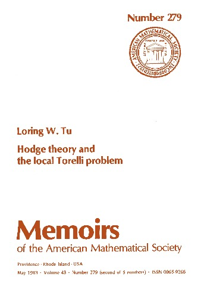
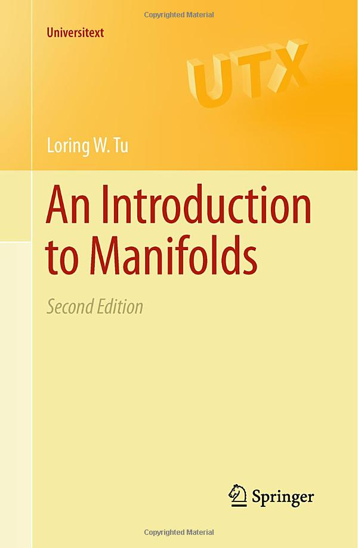
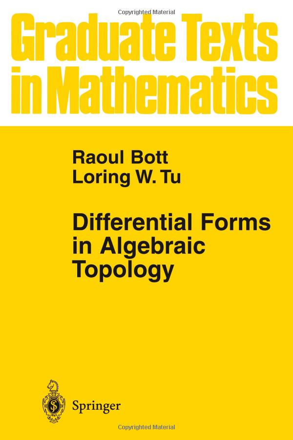
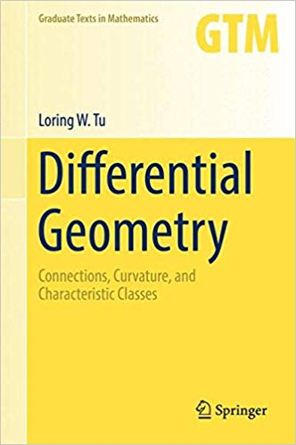
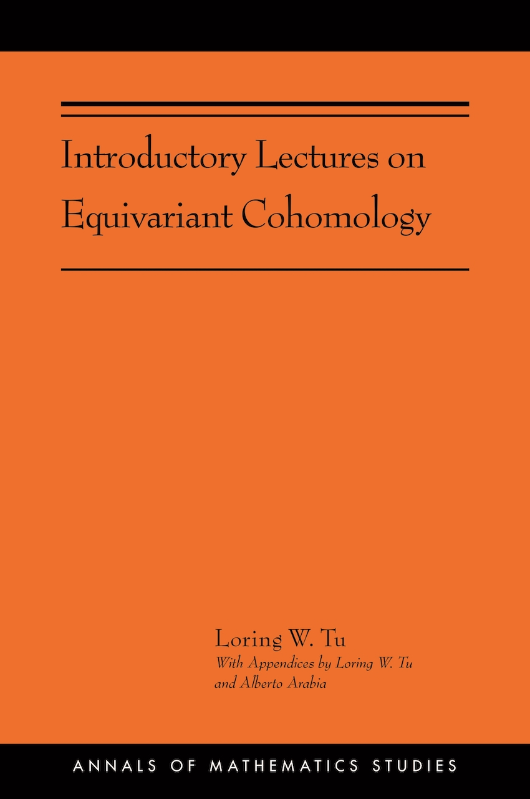
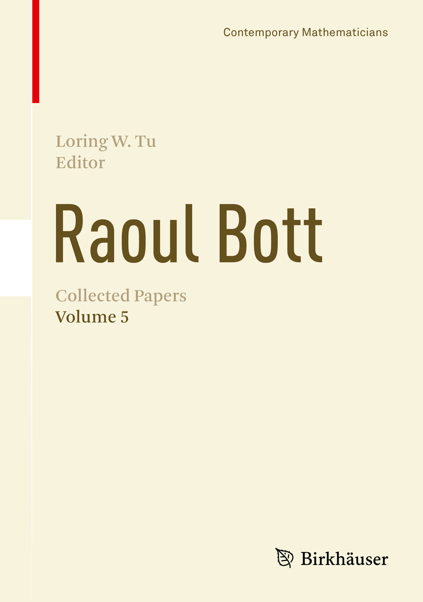
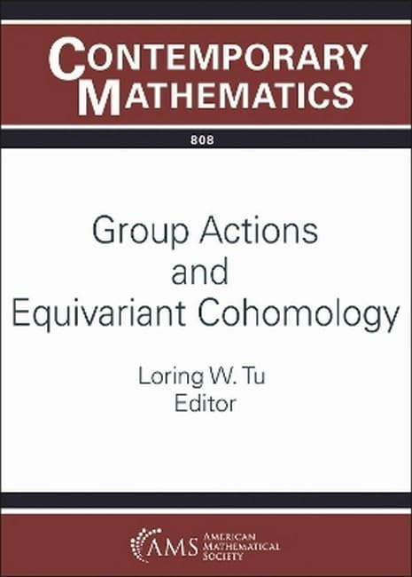
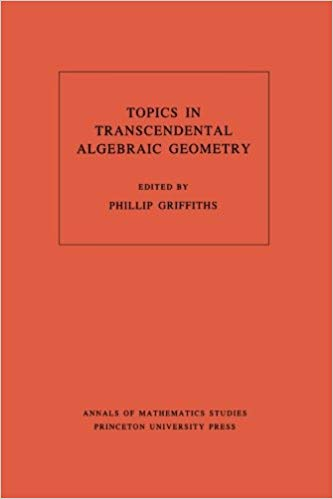
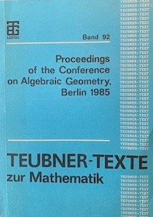
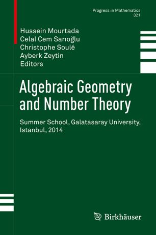

Books I Authored or Coauthored
-
 Hodge Theory and the Local Torelli Problem
Memoirs of the American Mathematical Society 279, AMS, Providence, Rhode Island,
1983, vi + 64 pages.
This monograph is part of my Ph.D. thesis. It is somewhat specialized,
but I think it gives a good exposition of mixed Hodge structures.
-
An Introduction to Manifolds,
Universitext, Springer, New York, second edition, 2011, xviii + 410 pages.
www.amazon.com/Introduction-Manifolds-Universitext-Loring-W/dp/1441973990/
ref=sr_1_1?ie=UTF8&s=books&qid=1308262568&sr=1-1
The second edition is completely revised from the first.
Apart from correcting errors and misprints, I have thought
through every proof again, clarified many passages, and added
new examples, exercises, hints, and solutions.
In the process, every section has been rewritten, sometimes
quite drastically.
The revision resulted in fifty additional pages.
errata
-
 Differential Forms in Algebraic Topology (with
Raoul Bott), third corrected printing, Graduate Text in Mathematics, Springer, New York, 1995.
www.amazon.com/Differential-Algebraic-Topology-Graduate-Mathematics/
dp/1441928154/ref=sr_1_2?ie=UTF8&s=books&qid=1308262568&sr=1-2
The third printing published in 1995 corrects misprints in earlier
printings; after that, the book has remained stable. Any printing
dated 1995 or later should be fine. Earlier printings should be
discarded.
-
Differential Geometry: Connections,
Curvature, and Characteristic Classes, Graduate Texts in Math. vol. 275,
Springer, New York, 2017, xvii + 346 pages.
errata
www.amazon.com/Differential-Geometry-Connections-Characteristic-Mathematics/dp/3319550829
-
Introductory Lectures on Equivariant Cohomology,
Annals of Mathematics Studies vol. 204,
Princeton University Press, Princeton, NJ, 2020, xx + 315 pages.
errata
www.amazon.com/Introductory-Lectures-Equivariant-Cohomology-Mathematics/
dp/0691191751/ref=sr_1_4?keywords=Loring+tu&qid=1564499203&s=books&sr=1-4
Books I Edited
-
 Raoul Bott: Collected Papers ,
Vol. 5, Springer Birkhäuser, Cham, Switzerland, 2017.
This volume brings together all of Bott's published articles since 1991 as well
as some articles published earlier but missing from the earlier volumes.
It contains commentaries by experts in the field and a collection of photographs
giving a panoramic view of Raoul Bott's life and his interaction with other
matthematicians.
-
Raoul Bott: Collected Papers ,
Vol. 5, Springer Birkhäuser, Cham, Switzerland, 2017.
This volume brings together all of Bott's published articles since 1991 as well
as some articles published earlier but missing from the earlier volumes.
It contains commentaries by experts in the field and a collection of photographs
giving a panoramic view of Raoul Bott's life and his interaction with other
matthematicians.
-
 Group Actions and Equivariant Cohomology ,
Contempory Mathematics, vol. 808, American Mathematical Society, 2024.
This volume contains the proceedings of the virtual AMS Special Session on Equivariant Cohomology,
held March 19--20, 2022.
Equivariant topology is the algebraic topology of spaces with symmetries. The book offers a view of the exciting progress
made in equivariant topology and related fields in the last twenty years.
Books I Contributed Articles to
-
 Topics in Transcendental Algebraic Geometry edited by
Phillip Griffiths, Annals of Mathematics Studies 106, Princeton University Press,
Princeton, NJ, 1984.
-
 Proceedings of the Conference on Algebraic Geometry,
Berlin 1985 edited by
Herbert Kurke and Marko Roczen, Teubner-Texte zur Mathematik 92,
B. G. Teubner, Leipzig, 1986.
-
The Founders of Index Theory 2nd edition, edited by
Shing-Tung Yau, International Press, Somerville, MA, 2009.
I have two articles in this book. Unfortunately, my first name is misspelled
as "Loren" in both of them.
-
Hodge Theory edited by
E. Cattani, F. El Zein, P. A. Griffiths, and L. D. Trá, Mathematical Notes 49,
Princeton University Press,
Princeton, NJ, 2014.
-
 Algebraic Geometry and Number Theory (Summer School,
Galatasaray University, Istanbul, 2014), edited by
M. Mourtada, C. C. Sarioglu, C. Soulé, A. Zeytin,
Progress in Mathematics 321,
Birkhäuser, Springer International Publishing, Cham, Switzerland, 2017.
-
Raoul Bott: Collected Papers ,
Vol. 5, Springer Birkhäuser, Cham, Switzerland, 2017.